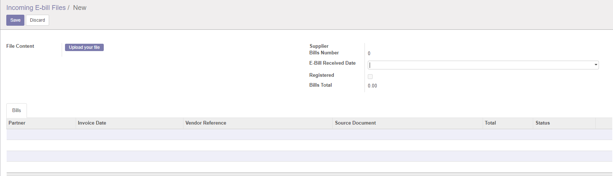

E-invoice receive

Ricezione fattura elettronica






This module allows to import Electronic Bill XML files version 1.2.1 received through the Exchange System (SdI)

Questo modulo consente di importare i file XML della fattura elettronica versione 1.2.1 ricevuti attraverso il Sistema di Interscambio (SdI)
Il modulo è destinato a tutte le aziende che dal 2019 emettono fattura elettronica
Le leggi inerenti la fattura elettronica sono numerose. Consultare la normativa fattura elettronica
| Description | Descrizione | Z0incomb | OCA | Note(s) | |
| N/A | e-fattura da fornitore, righe con IVA | ✅ | ✅ | ||
| N/A | e-fattura da fornitore, righe senza IVA | ✅ | ✅ | Non riconosce esatto codice IVA | |
| N/A | e-fattura da fornitori con ritenuta d'acconto | ✅ | ✅ | ||
| N/A | e-fattura da fornitori da agenti (enasarco) | ✅ | ✅ | ||
| N/A | e-fattura da fornitori con controllo su totale fattura | ✅ | ❌ | ||
| N/A | e-fattura da fornitori con split-payment | ❌ | ❌ | ||
| N/A | e-fattura da fornitori con reverse charge |  | ❌ | Non riconosce esatto codice IVA | |
| N/A | E-Nota Credito da fornitore | ✅ | ✅ | ||
| N/A | Gestione multi-aziendale | ✅ | ❌ | ||
| N/A | Validazione e-fattura per azienda | ✅ | ❌ | ||
| N/A | Generazione scadenzario passivo da e-fattura | ✅ | ✅ | ||
| N/A | Livello contabile solo testata senza dettagli | ✅ | ✅ | Per collegare fatture manuali | |
| N/A | Livello righe contabili per aliquote IVA | ✅ | ❌ | Per fatture con troppe righe | |
| N/A | Livelllo righe contabili in dettaglio | ✅ | ✅ | ||
| N/A | e-fattura da stabile organizzazione estera | ✅ | ❌ | ||
| N/A | e-fattura da rappresentante fiscale | ✅ | ❌ | ||


For every supplier, it is possible to set the 'E-bills Detail Level':
Moreover, in supplier form you can set the E-bill Default Product: this product will be used, during generation of bills, when no other possible product is found. Tax and account of bill line will be set according to what configured in the product.
Every product code used by suppliers can be set, in product form, in
Inventory » Inventory Control » Products
If supplier specifies a known code in XML, the system will use it to retrieve the correct product to be used in bill line, setting the related tax and account.

Per ciascun fornitore è possibile impostare il Livello dettaglio e-fatture:
Nella scheda fornitore è inoltre possibile impostare il Prodotto predefinito per e-fattura: verrà usato, durante la generazione delle fatture fornitore, quando non sono disponibili altri prodotti adeguati. Il conto e l'imposta della riga fattura verranno impostati in base a quelli configurati nel prodotto.
Tutti i codici prodotto usati dai fornitori possono essere impostati nella relativa scheda, in
Magazzino » Controllo inventario » Prodotti
Se il fornitore specifica un codice noto nell'XML, questo verrà usato dal sistema per recuperare il prodotto corretto da usare nella riga fattura, impostando il conto collegato.


If you use the module l10n_it_einvoice_send2sdi you will see records from SdI.
In the incoming electronic bill files list you will see, by default, files to be registered. These are files not yet linked to one or more bills.

Se si utilizza il modulo l10n_it_einvoice_send2sdi i dati sono caricati automaticamente alla ricezione da SdI.
La videta mostra solo i file non registrati ma è possibile modificare il filtro.
Authors | Autori:
Contributors | Partecipanti:
This module is maintained by the SHS_AV s.r.l..
This module is part of l10n-italy project.
Published information on | Informazioni pubblicate: 2024-07-21